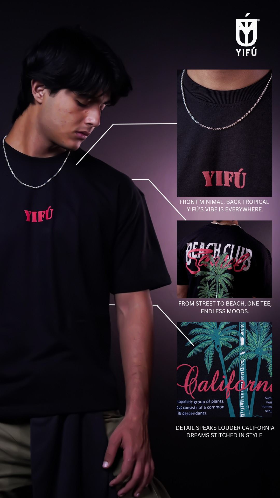

Yifu is a fashion brand that reflects style, confidence, and modern trends. Our production focused on showcasing apparel through clean, high-fashion visuals. We highlighted design, movement, and personality to create an aspirational narrative. The final output positions Yifu as a contemporary and stylish fashion brand.